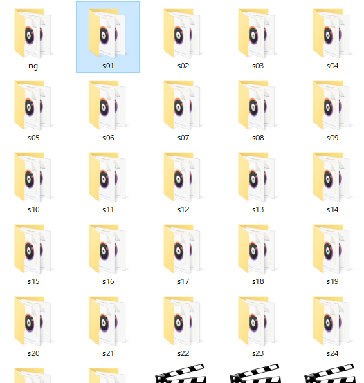
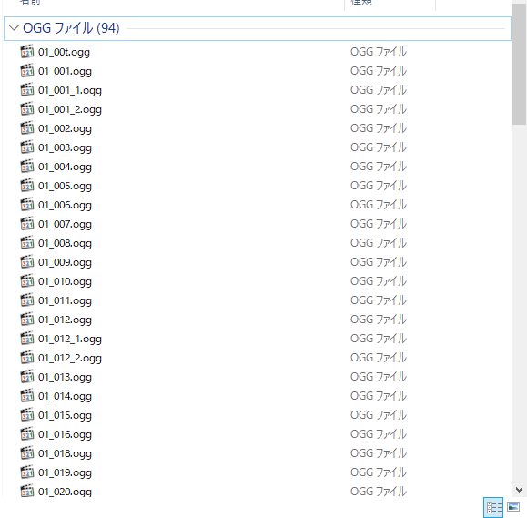
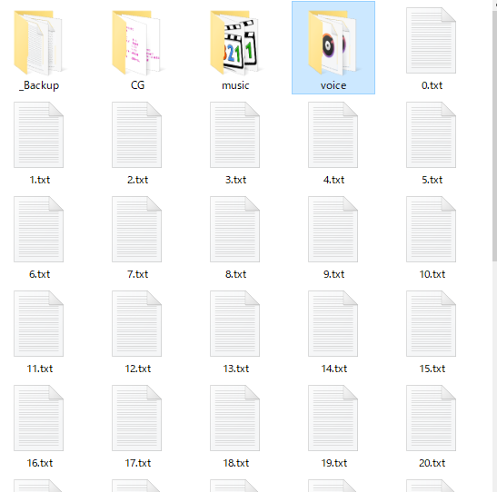
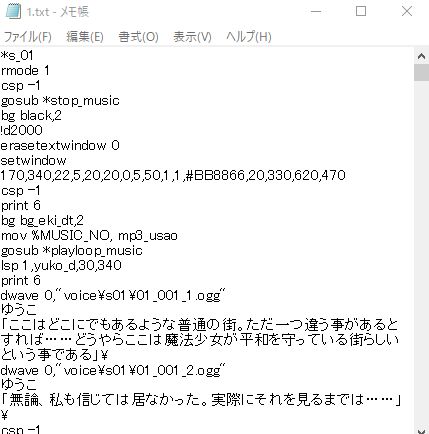
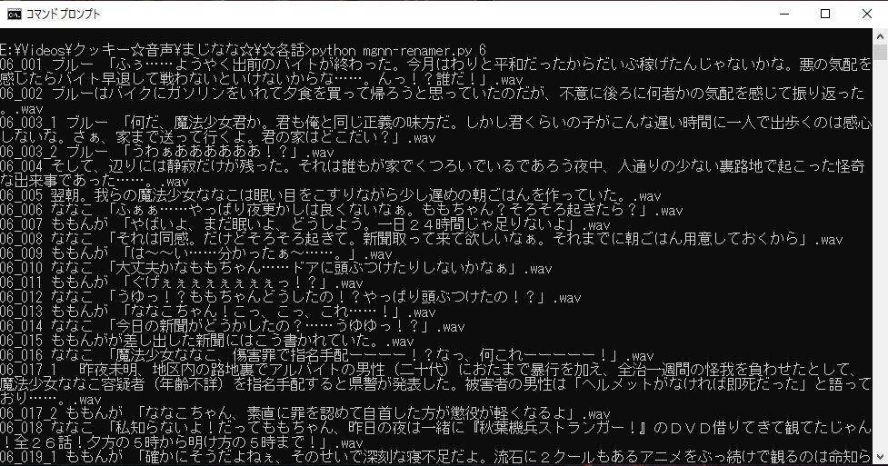
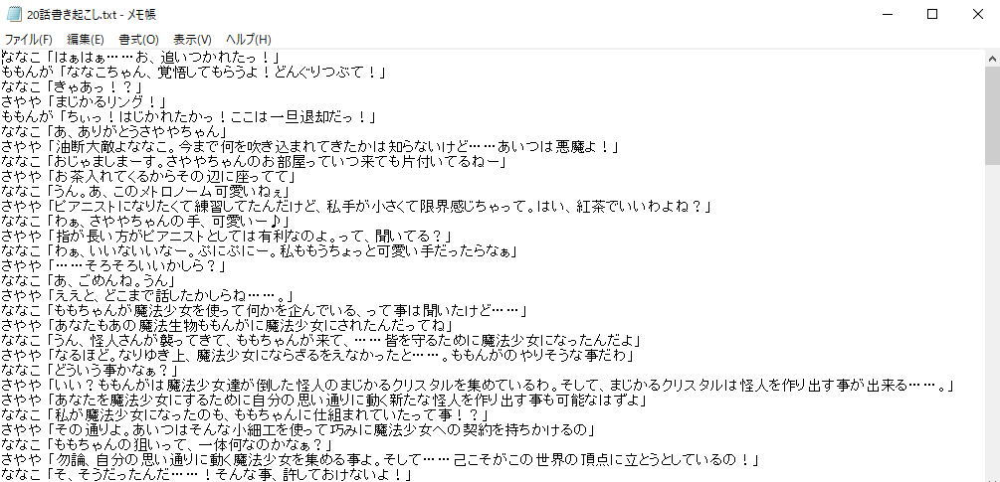
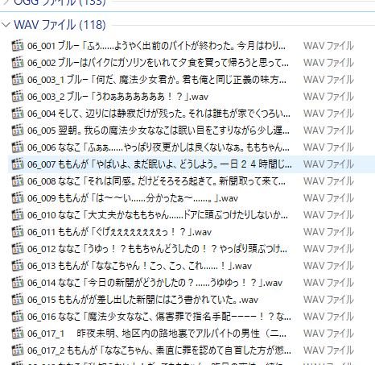
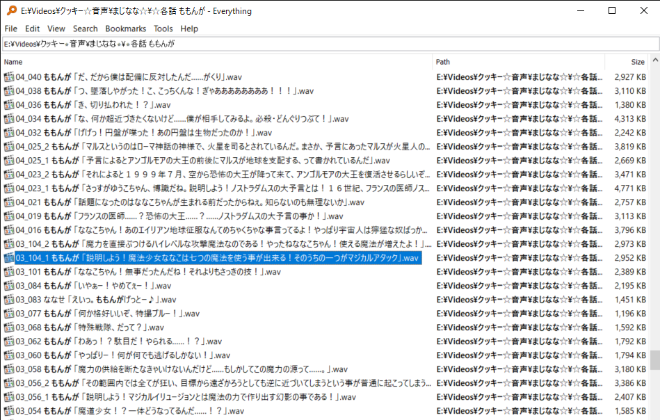

まじなな☆の音声素材が必要。
音声分割の古典的な方法は、Audacityでセリフを1つずつ選択し、ラベルを付けて「複数ファイル出力」だが:
まじなな☆は26話もあり、語録を探すのも面倒なので、できれば全セリフ音声を自動的に分割・リネームしたい。
そういえば、まじなな☆はYouTube・ニコニコとは別でWindows版が配布されている。
Win版は体験版的なやつだろうと思っていたが、よく見たらちゃんと全話収録されていた。
フォルダの中身を覗いてみると…………音声ファイルを発見！
 
AviUtlは.oggを読み込めない気がするので.wavに変換しないといけないが、これだけでも各段に作業量が減る。
当然ながら音声ファイル名は台詞そのものではなかったので、書き起こし作業が必要になる。
最近配布されたWavRenamer (sm36762395)が使えるかと思いDLしてみたが、なんか動かなかった。
しょうがないので映画の字幕とかに使うような書き起こし作成用のプログラムを探していると、あることに思い当たった。
…………Win版まじなな☆に音声ファイルが入っているなら、セリフもテキストファイルとして入っているのでは？
 
あった
音声と書き起こしを使い、適当にスクリプトを書けば作業を自動化できる。
スクリプトがやることは：
[1] SE、BGM、演出のタイミング指定など
[2] フォルダに未使用の音声やダブついた台詞が混じっているので、実際に読み込まれている音声ファイルを抽出する必要がある
import os
import sys
from pydub import AudioSegment
episode = str(sys.argv[1])
#episode = '26'
#######################################################
path = "E:\Videos\クッキー☆音声\まじなな☆\☆各話"
audio_path = "E:\Videos\クッキー☆音声\まじなな☆\☆各話\s" + episode
input_txt = episode + '.txt'
output_txt = episode + '話書き起こし.txt'
#######################################################
##書き起こし作成
#以下のキーワードを含む文字列を消す
words_to_delete = ['goto', ';', 'cl', 'ld', 'wavestop', 'quake', '*s_', 'rmode', 'csp','gosub','bg','!d','erasetextwindow','setwindow ','print','lsp','click', 'mov', 'mp3', '.wav', '!w', 'se']
os.chdir(path)
if not os.path.isfile(output_txt):
open(output_txt, 'w').close()
input = open(input_txt, "r").read().split("\n")
output = open(output_txt, 'w')
cut_inputs = []
filenames = []
for i, line in enumerate(input):
clean = True
line = line.replace("\\","") # 言語環境のせいか\（円マーク・バックスラッシュ）の挙動がおかしいので対策
for word in words_to_delete:
if word in line:
clean = False
if not line.strip(): # 空行を飛ばす
clean = False
if line.startswith('dwave 0,"voice'): # 元ファイル名リストに追加
clean = False
line = line[17:].rstrip('"') # 後ろについてるゴミを消す
if "00t" in line: # サブタイ音声の扱いが一定しないので消す
continue
elif "000" in line:
continue
else:
filenames.append(line)
if clean == True: # 新規ファイル名リストに追加
cut_inputs.append(line)
for i, line in enumerate(cut_inputs): # 鍵カッコで始まる行（＝セリフ）を1つ前の行（＝キャラ名）とつなげる
if line.startswith("「") or line.startswith("『") :
cut_inputs[i-1] = cut_inputs[i-1].strip() + " " + line
cut_inputs.pop(i)
output.write("\n".join(cut_inputs))
output.close()
## .wav変換＋リネーム
output = open(output_txt, 'r')
os.chdir(audio_path)
#audio_files = os.listdir()
for i, file in enumerate(filenames):
name, ext = os.path.splitext(file) #ファイル名と拡張子を分割
name = name + " " + cut_inputs[i] # 元のファイル名 + 空白 + 新ファイル名リスト
if ext == ".ogg": #.wavに変換
input_sound = AudioSegment.from_ogg(file)
input_sound.export("{0}.wav".format(name), format="wav")
print(name + ".wav") # デバッグ
コマンドラインからpython mgnn-renamer.py + 話数を入力して実行[3]
[3] 1話ずつ実行するのはサブタイ・ナレーションなどのイレギュラーや、見逃したコマンド行などに対応するため

生成された書き起こし

ファイル名にキャラ名を付けておいたので、キャラ別に整理しやすい。

Windowsのファイル検索は糞なのでSearch Everythingを使おう。

（キャラ別に整理し終わったら配布します）